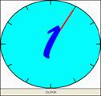

|
|
| Home > Select a Unit > Unit 7: ÌGBÀ ÀTI ÀKÓKÒ | |
 TELLING TIME IN YORÙBÁ
HOW TO TELL TIME IN YORUBA IS PROVIDED HERE IN FOUR PARTS:
I. QUESTIONS FOR INQUIRING ABOUT THE TIME:
What time is it? KÍ NI AAGO WÍ? tàbí KÍ NI AAGO SO?
AAGO MÉLÒÓ NI Ó LÙ? tàbí AAGO MÉLÒÓ LÓ LÙ?
II. KNOWLEDGE NEEDED TO TELL TIME:
a. Numbers 1-29 in their cardinal forms: kan; méjì; mcta; m}rin, márùn-ún, m}fà, méje, m}jv, m}sàn-án, m}wàá àti b}| b}| lv (etc.)
b. Key words:
aago / agogo: watch/time ìx}jú: minute
kvjá: past / after the hour wákàtí: hour
kù: remains / before the hour wí / sv: to say
ààbz: half (In telling time, ààbz refers to half past the hour).
c. Division of the hour in Yoruba:
You should take every hour of the clock as divided into two equal parts in Yoruba with a median:
1 to 29 minutes past the hour half hour 1 to 29 minutes to the hour
KVJÁ ààbz KU
d. Periods of the day in Yoruba:
àárz morning zsán afternoon
ìrzl} evening al} night
<òru during the night
III. FORMAT FOR TELLING TIME IN YORUBA:
- on the hour: the hour period of the day
- past the hour: the hour period of the day past number of minutes
- half past the hour: the hour half period of the day
- before the hour: the hour period of the day before number of minutes
IV. EXAMPLES:
ÌBÉÈRÈ: KÍ NI AAGO WÍ? tàbí KÍ NI AAGO SO?
AAGO MÉLÒÓ NI Ó LÙ? tàbí AAGO MÉLÒÓ LÓ LÙ?
ÌDÁHÙN:
1:00 pm: Aago kan zsán
1:10pm: Aago kan kvjá ìx}jú m}wàá zsán
1:20pm: Aago kan òsán kvjá ogun ìx}jú
1:25pm: Aago kan òsán kvjá ix}jú márùndínlógún
1:30pm: aago kan ààbò zsán*
1:40pm: Aago méjì òsán ku ogun ìx}jú
1:50pm: Aago méjì òsán ku ix}jú mewa
1:55pm: Aago méjì òsán ku ix}jú marun-un
2:00pm: Aago méjì zsán
Notes: - The period of the day might not always be overtly stated.
*It is also possible to have the period of the day at the end
IX{ XÍXE /PRACTICE EXERCISE:
KÍ NI AAGO WÍ?
1. 8:34 am: 2. 6:26 pm:
3. 10:13 pm: 4. 5.37 am:
5. 3:40 pm: 6. 12noon:
AAGO MÉLÒÓ NI O MAA N (USUALLY) ..........
1. Sùn ní al} 2. Jcun ní àárz
3. Kàwe lójoojúm< (everyday) 4. Wo tclifíxvnnnù ni ìrzl}